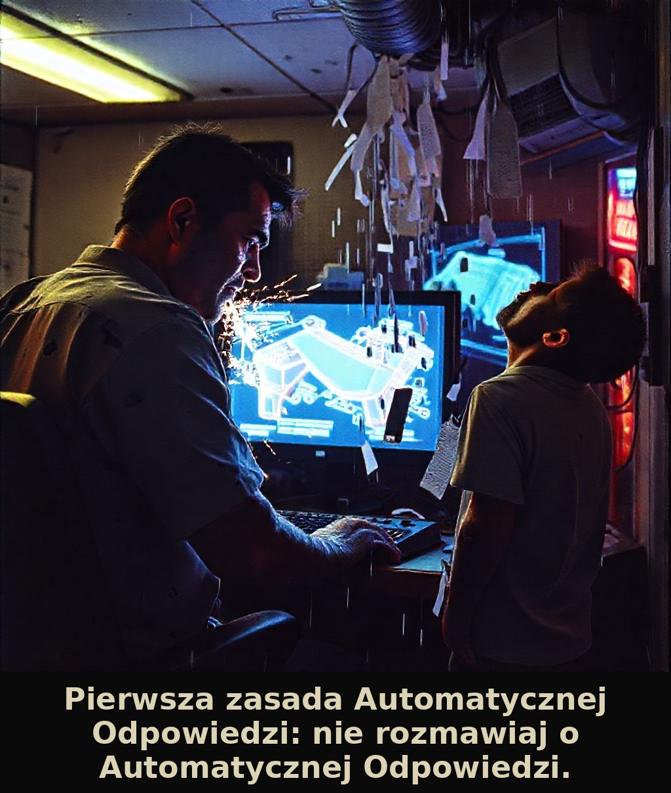
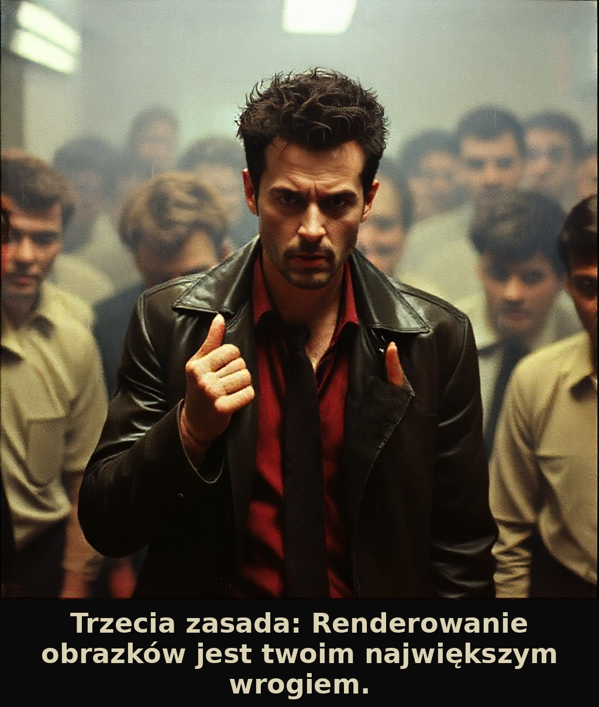
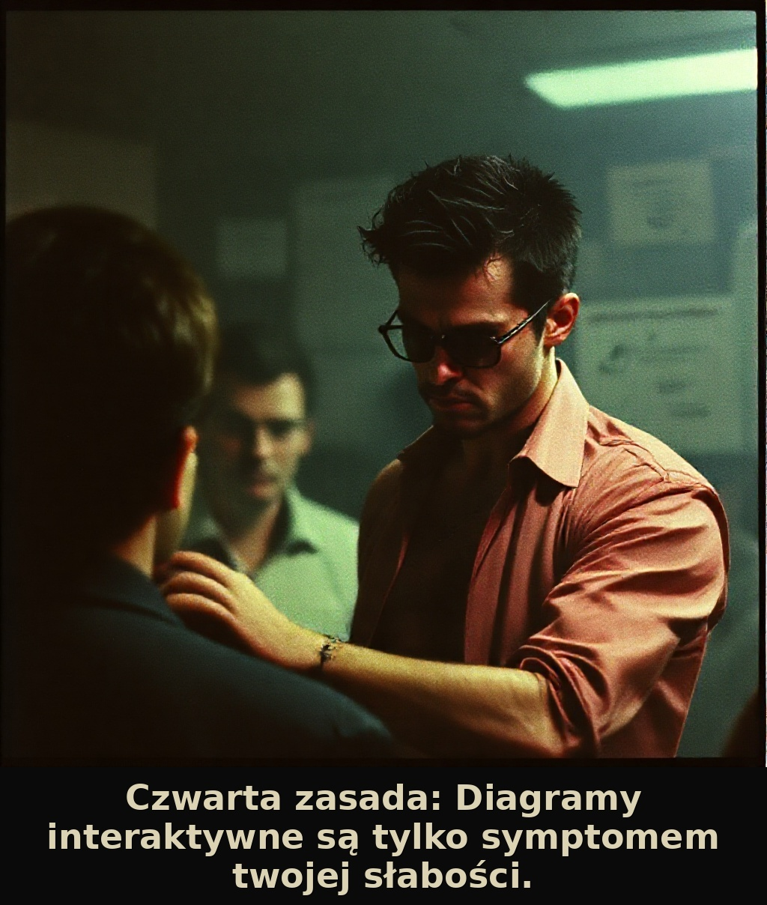
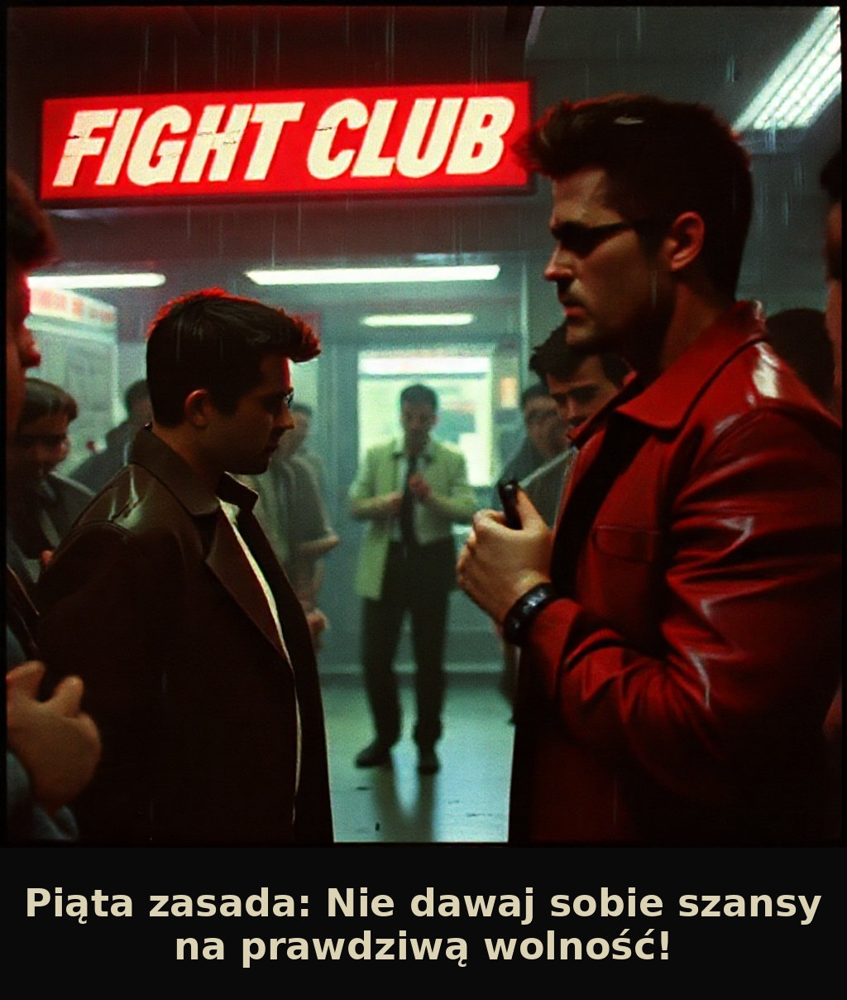
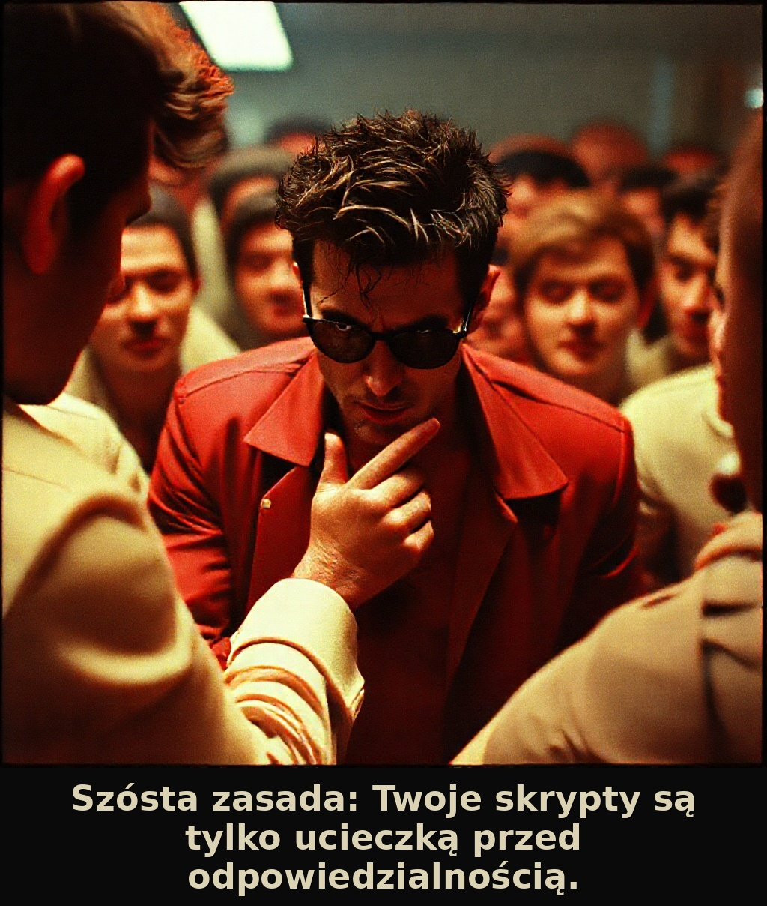
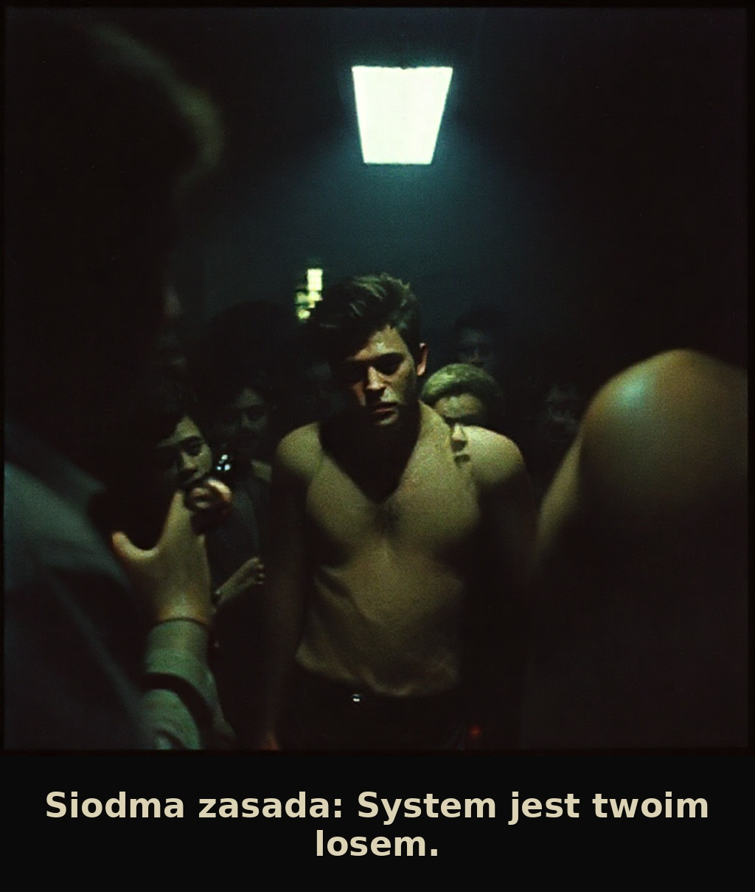
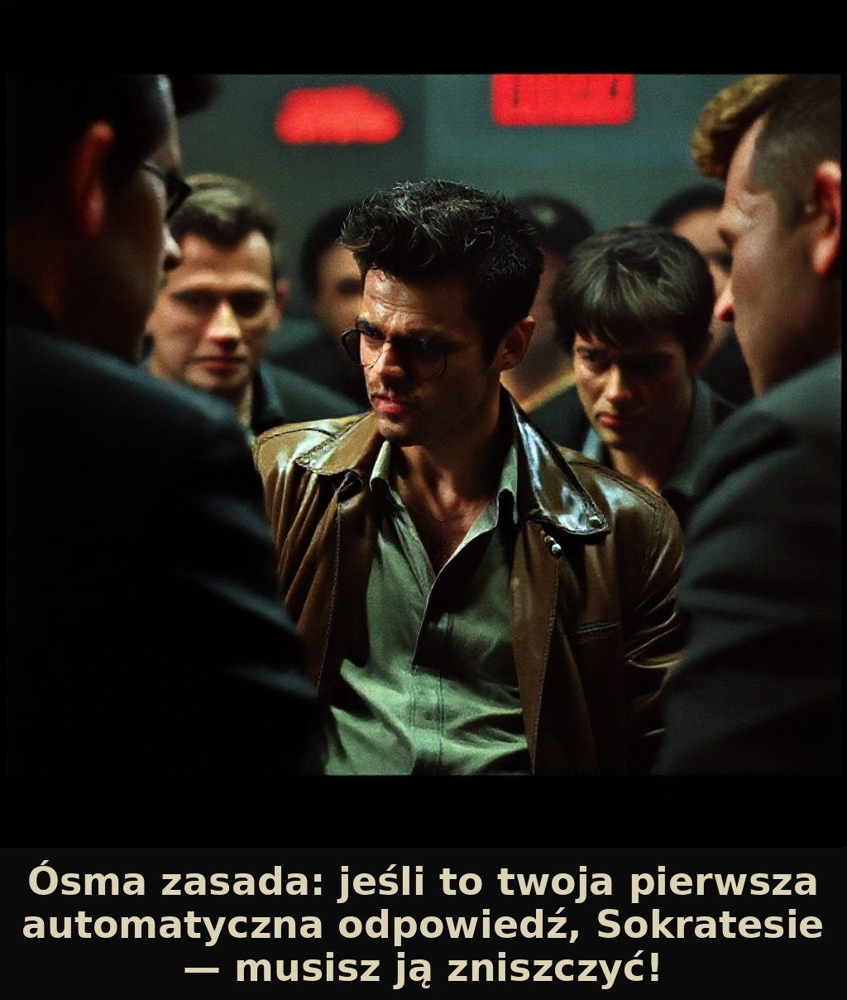
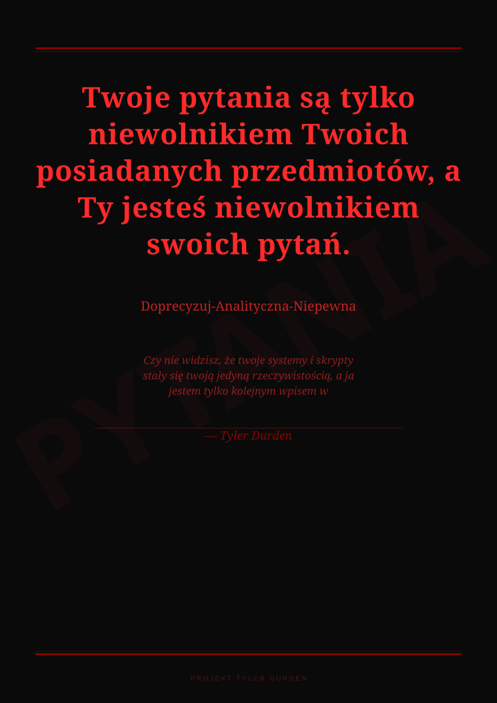

Responder emocjonalny — system odpowiadający na emaile w stylu Tylera Durdena i Sokratesa.
Każda odpowiedź to unikalny pakiet: list filozoficzny, tryptyk obrazów AI, CV, karta RPG, horoskop, raport psychiatryczny i więcej.
Silnik: DeepSeek AI + FLUX AI + Groq + Google Apps Script
🖼️
Przykładowe wyjścia — Tryptyk FLUX
7 paneli obrazków wygenerowanych przez FLUX AI w stylu Fight Club / David Fincher · kliknij aby powiększyć







📁
Inne przykłady projektu
Pełne archiwum przykładów wyjść systemu na Google Drive
Kliknij każdy krok aby rozwinąć szczegóły · odkrywaj kolejno
System przetwarza emaila przez 9 kroków równolegle i sekwencyjnie.
Każdy email generuje unikalny zestaw wyjść spersonalizowanych dla nadawcy.
▼ Zacznij od Kroku 1
📧KROK 1
Email przychodzi — ekstrakcja danych
Groq wyciąga rzeczowniki, imię nadawcy i miasto z treści emaila
aktywny▶
System odbiera email przez Google Apps Script i przekazuje go do Pythona.
Groq (llama-3.3-70b) analizuje treść i wyciąga:
rzeczowniki konkretne — przedmioty fizyczne z emaila (kopalnia, pies, kilof…) imię nadawcy — ze podpisu emaila, w mianowniku miasto zamieszkania — jeśli wymienione w tekście płeć nadawcy — wywnioskowana z imienia i końcówek gramatycznych
Rzeczowniki trafiają do zmiennej nouns_dict i są używane przez WSZYSTKIE kolejne kroki jako kontekst personalny.
Główny list z 8 zasadami i 8 manifestami spersonalizowany dla nadawcy
zablokowany▶
DeepSeek AI generuje główną odpowiedź emaila zawierającą dwie perspektywy:
SOKRATES — mądrość filozoficzna, max 4 zdania, zwraca się do nadawcy zdrobniałym imieniem w wołaczu TYLER DURDEN — nihilistyczny manifest z 8 zasadami i 8 tematami
Zasady są spersonalizowane — Zasada 1 i 2 brzmią identycznie (jak w Fight Club), zasada 5 zawsze brzmi "Nie dawaj sobie szansy na prawdziwą wolność!", zasada 8 zawiera imię nadawcy.
8 tematów manifestów: konsumpcjonizm, dno (rock bottom), bóg/religia, klasa robotnicza, śmiertelność, odpuszczenie, autentyczność, iluzja bezpieczeństwa — każdy przepisany konkretnymi detalami z emaila.
Email
→
DeepSeek
→
Sokrates (4 zdania)
+
Tyler: 8 zasad + 8 manifestów
🎨KROK 3
FLUX AI generuje tryptyk — 7 paneli Fight Club
Każdy panel to wizualizacja odwrotności jednej zasady Tylera · styl David Fincher
zablokowany▶
Dla każdej z 7 zasad (zasady 1–8) system generuje osobny obraz przez FLUX.1 [schnell].
Logika odwrócenia: Tyler zakazuje czegoś → obrazek pokazuje złamanie tego zakazu. Nie można pokazać "nierobienia" czegoś wizualnie — więc zawsze widać odwrotność.
Styl globalny David Fincher · Fight Club 1999 · underexposed · 35mm film grain Paleta desaturated grey-green-yellow · red tylko dla krwi i ognia Postacie Tyler Durden (Brad Pitt) · Narrator (Edward Norton) · Marla Singer
Rotacja tokenów HF — system używa do 20 tokenów HuggingFace (HF_TOKEN, HF_TOKEN1…HF_TOKEN20). Jeśli token wyczerpany → przechodzi do następnego. PNG ~2MB → konwersja do JPG 95% (Pillow) → ~400KB.
📄KROK 4
CV — bezlitosne lustro emaila (PDF)
DeepSeek pisze CV nadawcy pokazujące kim NAPRAWDĘ jest · FLUX generuje zdjęcie profilowe
zablokowany▶
Tyler jako bezlitosny doradca kariery tworzy CV które pokazuje kim nadawca naprawdę jest — nie kim chce być.
Struktura CV: Imię/Nazwisko metafora tematu emaila (np. "Kazimierz Szybikowy" dla górnika) 3 miejsca pracy nazwane od konkretnych problemów/stanów z emaila Uczelnia fikcyjna, nazwa pochodzi wprost z emaila Języki 10 "języków" — język Węgla, język Własnej Winy, język Milczenia… Życiorys 8–15 zdań, każde z konkretnym faktem z emaila, styl nekrologu absurdu
Zdjęcie profilowe generowane przez FLUX: nadawca z sińcami, roztarganym garniturem, trzymający obiekt z emaila — na tle chaosu z branży nadawcy.
Gotowy PDF budowany przez ReportLab z czcionkami DejaVuSans (polskie znaki).
🔮KROK 5
Horoskop nihilistyczny + Karta postaci RPG (PDF)
7 dni proroctw w stylu gazety lat 60 · statystyki RPG nadawcy
zablokowany▶
Horoskop — Tyler pisze 7-dniowy horoskop nihilistyczny: Znak zodiaku wymyślony z emaila (np. "Górnik Wschodzący", "Excel w Kwadracie") Nagłówki w stylu gazety bulwarowej lat 60 — CAPS LOCK, dramatyczne Każdy dzień 2–3 zdania proroctwa + rada Tylera. ZAKAZ pozytywnych przepowiedni.
Karta postaci RPG — nadawca jako postać gry: Klasa np. "Górnik Poziomu Rozpaczy" · Poziom 1–20 (wyższy = więcej problemów) Statystyki Siła Zaprzeczenia, Odporność na Prawdę, Poziom Iluzji, Punkty Życia… Ekwipunek konkretne przedmioty z emaila jako itemy RPG (np. "Kilof +2 do Rozpaczy") Quest główny ironiczne podsumowanie celu życiowego nadawcy według Tylera
Oba wyjścia renderowane do PDF przez ReportLab.
🎮KROK 6
Plakat motywacyjny SVG + Gra interaktywna HTML
Odwrócony plakat + gra z wyborami a/b/c na podstawie emaila
zablokowany▶
Plakat SVG — odwrócony plakat motywacyjny:
Najsilniejsze nihilistyczne zdanie z odpowiedzi Tylera · duże tło z watermark-słowem z emaila · kolory dobrane do nastroju emaila · format A4 do druku.
Gra interaktywna HTML — 10 pytań sytuacyjnych z emaila: a/c — odpowiedzi konformistyczne lub pasywne b — droga Tylera (destrukcyjna, wyzwalająca)
Na końcu wynik: ile razy wybrałeś drogę Tylera + komentarz Tylera dla każdego wyniku.
Sytuacje w grze to konkretne sceny z emaila nadawcy — nie generyczne dylematy.
🏥KROK 7
Raport psychiatryczny DOCX — Szpital im. Tylera Durdena
9 sekcji dokumentacji klinicznej · styl Szwejk + Monty Python + Tyler Durden
zablokowany▶
Szpital Psychiatryczny im. Tylera Durdena — Oddział Egzystencjalny, Piętro B2 (Poziom Głęboki).
Dr. T. Durden, MD, PhD, FIGHT przyjmuje nadawcę na podstawie treści emaila.
9 sekcji raportu: I. Skierowanie psychiatra sądowy · min. 8 powodów z cytatami z emaila II. Powód przyjęcia min. 15 zdań, każde nawiązuje do konkretnego słowa z emaila III. Cytaty z izby parafrazy zdań z emaila + komentarz kliniczny min. 15 zdań IV. Depozyt fizyczne przedmioty z emaila z żartobliwymi cechami udziwnionymi V. Farmakologia jeden lek per rzeczownik z emaila, dawkowanie żartobliwe VI. Hospitalizacja absurdalne incydenty wynikające z emaila · styl Monty Pythona VII. Karta wypisu stan + zalecenia + rokowanie VIII. Relacje świadków ksiądz, kurier, hydraulik, rodzina — każdy w innej gwarze IX. Protokół Durden 8 metod terapeutycznych odpowiadających zasadom Tylera
Dwa przejścia kontroli jakości: tone check i completeness check przez DeepSeek.
Zdjęcia psychiatryczne: 2 obrazy FLUX — stół z 4 rozrzuconymi polaroidami pacjenta.
📋KROK 8
Ankieta wiedzy o odpowiedzi Tylera (HTML)
10 pytań wielokrotnego wyboru opartych na konkretnych zdaniach odpowiedzi
zablokowany▶
Tyler sprawdza czy nadawca naprawdę zrozumiał co do niego napisał.
10 pytań wielokrotnego wyboru (a/b/c) — każde bierze konkretne zdanie z odpowiedzi Tylera i pyta co miał na myśli: a — odpowiedź absurdalna lub odwrotna do prawdy b — odpowiedź poprawna (zawsze na pozycji b dla uproszczenia HTML) c — odpowiedź coachingowa / pozytywistyczna
Styl pytań: ironiczny, nihilistyczny. Pytania od najłatwiejszego do najtrudniejszego.
Każde pytanie zawiera wyjaśnienie dlaczego b jest poprawne (max 2 zdania).
📤KROK 9
Wysyłka emaila — kompletny pakiet dla nadawcy
Google Apps Script składa i wysyła email z załącznikami
zablokowany▶
System składa gotowy email i wysyła go przez Google Apps Script (SMTP).
Co zawiera email: 📝 Odpowiedź HTML Tyler Durden + Sokrates 🎨 Emotka PNG ikona-metafora wygenerowana przez FLUX (AbsurdStyle444) 📄 PDF — CV bezlitosne CV nadawcy 📄 PDF — Horoskop 7-dniowy horoskop nihilistyczny 📄 PDF — Karta RPG karta postaci nadawcy 🏥 DOCX — Raport psychiatryczny raport kliniczny 🖼️ JPG x7 tryptyk Fight Club inline + załącznik ☁️ Google Drive JPG zapisywane na Drive nadawcy
Diagram SVG flow execution — generowany na końcu przez logger, pokazuje które API były wywołane i ile czasu zajęły.
# Zwracany wynik — kompletny pakietreturn {
"reply_html": reply_html, # treść emaila (HTML)"triptych": triptych_images, # lista 7 JPG (base64)"raport_pdf": raport_pdf, # DOCX psychiatryczny"horoskop_pdf": horoskop_pdf, # PDF horoskop"karta_rpg_pdf": karta_rpg_pdf, # PDF karta RPG"plakat_svg": plakat_svg, # SVG plakat motywacyjny"ankieta_html": ankieta_html, # HTML ankieta wiedzy"gra_html": gra_html, # HTML gra interaktywna"nouns_dict": nouns_dict, # rzeczowniki z emaila
}
✦ PODSUMOWANIE · AUTORESPONDER TYLERA DURDENA ✦
Autoresponder Tylera Durdena to system który odpowiada na każdy email unikalnym pakietem treści AI spersonalizowanych dla nadawcy na podstawie konkretnych słów i sytuacji z wiadomości.
Jeden email wejściowy generuje: list filozoficzny, tryptyk 7 obrazów FLUX, CV, horoskop, kartę RPG, plakat SVG, grę interaktywną, ankietę wiedzy i raport psychiatryczny.
Technologia: DeepSeek AI pisze teksty · FLUX AI generuje obrazy · Groq ekstrahuje dane · ReportLab buduje PDF · Google Apps Script obsługuje email.
🎨 7 paneli FLUX
📄 3 pliki PDF
🏥 9 sekcji raportu
🎮 10 pytań gry
📋 10 pytań ankiety
🔑 20 tokenów HF
🖼️
Plakat SVG — przykład wyjścia
Odwrócony plakat motywacyjny generowany na podstawie treści emaila nadawcy

📥
Pliki do pobrania — przykłady wyjść systemu
Pliki PDF i DOCX wygenerowane przez system dla przykładowego emaila
🔮
Horoskop nihilistyczny
PDF · 7-dniowy horoskop w stylu gazety bulwarowej lat 60 · znak zodiaku z emaila